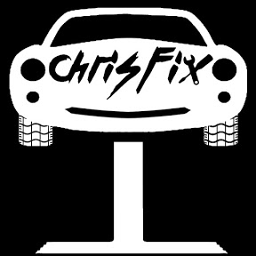
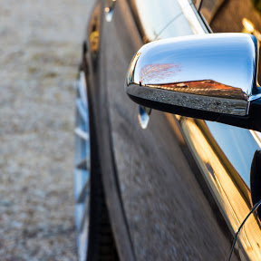
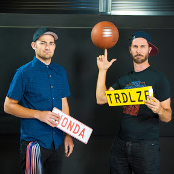
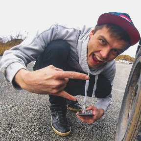
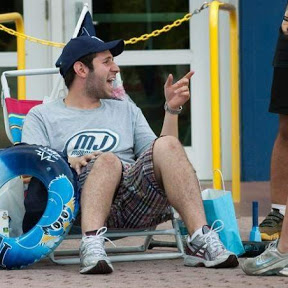

Ameerika YouTuber, kelle sisu on põhiliselt autode parandamine. Üldjuhul parandab ta oma videotes Ford Mustangi, mis võib erienda
kohalikest saksaautodest, aga tööprotsessist annab väga hea ülevaate.

Tartust pärit noormees, kes postitab videoid oma õhtustest seiklustest, kiirendusvõistlustest ja muudest üritustest. Videote kvaliteet kõrgem
võrreldes teiste eestlastest YouTuberitega.

Sõbrad Marty ja Moog, kes parandavad autosid ja teevad huvitavaid projekte. Võrreldes Chrisfixi kanaliga on nende sisu mõeldud
veidi suurematele autohuvilistele.

Tegemist rõõmsameelse Eesti YouTuberiga, kes postitab videosid oma projektidest, üritustest, millel ta osaleb, ja oma
tegemistest vabal ajal.

YouTuber, kes ostab oksjonitelt vigaseid superautosid, mida parandada ja edasi müüa. Nendest videotest on hea vaadata,
kuidas erinevad eksootilised autod ja nende parandamine, tavaautodest.